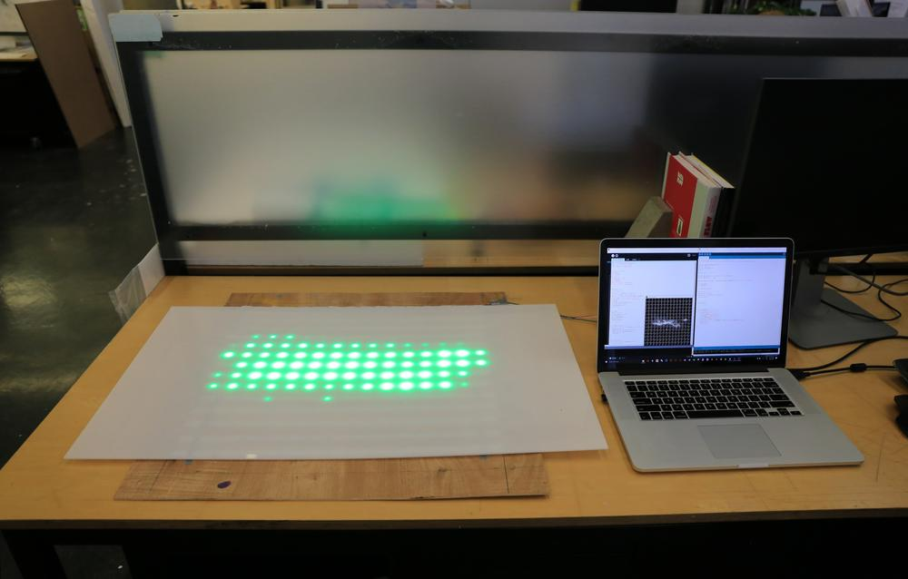
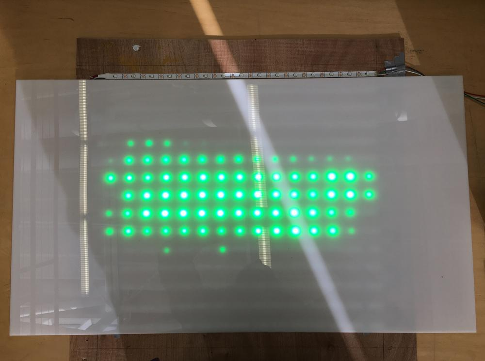
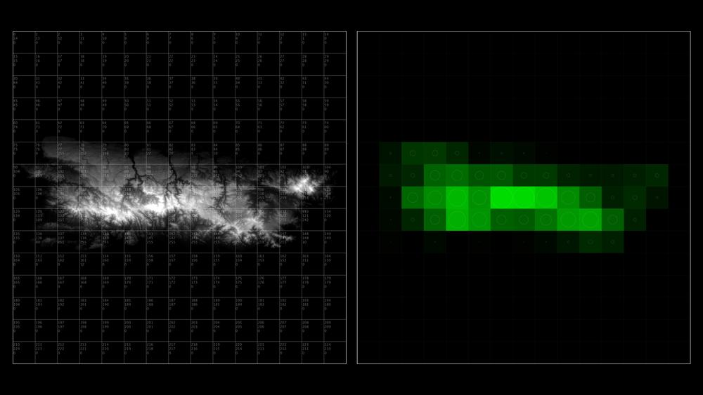

Light Test
[2018]
This prototype light table combines Arduino, Processing, GIS, and LED lights to draw attributes of geospatial data by luminescence. Photographed below is a digital elevation model of Puerto Rico, where the brightness of each LED corresponds to the elevation of that sampled area. This unique combination of hardware and software offers potential for dynamic modes of representation within traditionally static environments, such as physical models.

Prototype light table mapping the elevation of Puerto Rico to LED brightness

Overhead shot of light table

Image processing to convert elevation to brightness value